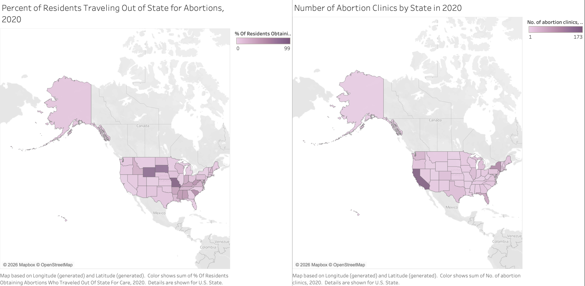
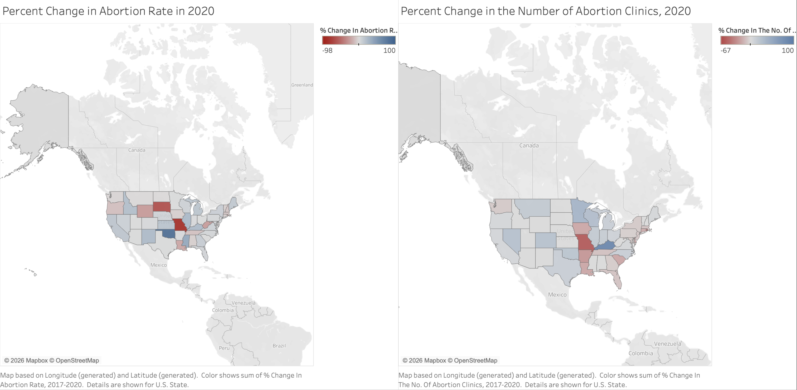

Proposition: In 2020, the number of abortion clinics across the states was correlated with the amount of residents searching for abortion care outside of their state of residence.
FOR the Proposition

Design Decisions and Rationale:
-
A map was chosen to convey state boundary lines and interstate travel patterns. (Earnest +2)
A map was chosen because the variable (interstate travel) is inherently geographic. It allows readers to see adjacency and border effects, which are central to understanding residents crossing state lines due to lack of clinics. While a bar chart was considered, it would obscure regional clustering and adjacency. The map also enables readers to draw on prior geographic knowledge about state policies, reinforcing the persuasive impact. -
Purple sequential gradient was utilized. (Neutral 0)
Purple was selected in recognition of Women’s Month, though the color itself was not central to the argument. A sequential purple gradient reinforces magnitude rather than polarity, which is appropriate because the variable does not have a meaningful midpoint. The gradient effectively highlights variation in intensity across states without implying political opposition. -
Percentage of residents was contrasted with raw number of abortion clinics. (Deceptive -2)
Placing a percentage measure beside a raw count invites direct visual comparison despite the variables being on fundamentally different scales. Percentage values obscure the magnitude of underlying populations, while clinic counts are not normalized for population density or geographic size. Without adjusting clinics per capita or per square mile, readers may infer causal relationships that the visualization does not support.
AGAINST the Proposition

Design Decisions and Rationale:
-
Red and blue diverging color scale was utilized. (Deceptive -1)
Red and blue were intentionally chosen due to their strong political associations with Republican and Democratic parties. These colors may evoke emotional and ideological responses, encouraging readers to map political assumptions onto the data. A neutral diverging palette (such as orange–purple or gray–green) was considered, but red–blue was selected for its cultural salience and persuasive impact. -
The legend does not span -100% to 100% and instead uses observed min/max values. (Deceptive -2)
The legend was auto-scaled to the minimum and maximum values in the dataset rather than a symmetric range. This amplifies perceived differences between states by increasing color contrast. Extreme states appear more dramatic relative to others, potentially exaggerating variation and drawing attention to specific outliers. -
Percent change was utilized rather than absolute change. (Deceptive -2)
Percent change can exaggerate shifts when baseline numbers are small. For example, a state with 2 clinics dropping to 1 shows a -50% change, which appears dramatic despite representing only one clinic. Without knowing the baseline counts or demand, percent change may distort the perceived magnitude of change. -
Abortion rate was shown rather than out-of-state travel. (Deceptive -2)
By presenting percent change in in-state abortion rates rather than the percentage of residents traveling out of state, the visualization may suggest reduced demand instead of displacement of demand. This framing obscures structural access barriers and may lead readers to assume that decreases in abortion rates reflect behavioral change rather than restricted access.
Final Reflection
It was difficult to make a proposition at first and I think I need to strengthen my ability to sift through a data set meaningfully in a quick matter. I think especially because I have a bias in my personal beliefs of abortion that I could more easily present a proposition that supported my belief that abortion clinics in pro-choice states are resources are for residents in pro-life states that need abortions. It took me quite a long time to understand how to frame my “against” visualization. I think for me, ethical analysis and visualization correlates to responsible use of data, but also a list of standard functions that every data visualizer should abide by (in the generation of legends that accurately represent data scale, in the labeling of certain axes and choice of comparison between different types of data without witholding information (for example, magnitude or per-capita information when presenting percentages). I think beyond these standardized “requirements” I think ethical analysis can be kind of ambiguous. Visualizers can be deceptive beyond this academic exercise especially if they know their audience, so I think it can be hard to argue for acceptable versus misleader persuasive choices without being in tune with a specific audience and the way data on a specific topic is typically presented.